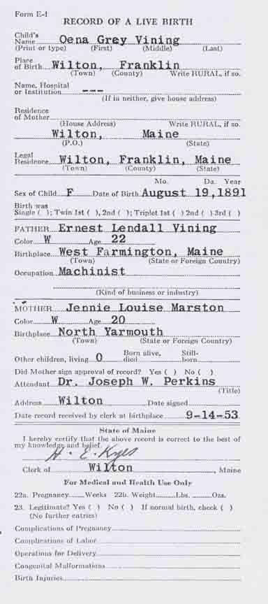
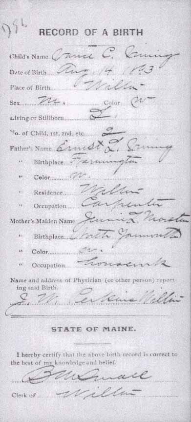

Birth Data
Birth records for Oena Gray Vining and Vance C. Vining, children of Charles Ernest Lindel Vining and Jennie Louise (Marston) Vining (from Maine State Archives):

Census Data
| 1890 | 1900 | 1910 | 1920 | 1930 | 1940 | |
| Charles Ernest Lindel Vining | ? | 32 | 40 | ? | ? | ? |
| Jennie Louise (Marston) Vining | ? | 29 | 38 | ? | ? | ? |
| Oena Gray Vining | 8 | 18 | ? | ? | ? | |
| Vance C. Vining | dead | |||||
| Philip Loring Vining | 11 m. | 10 | ? | ? | ? |


Death Data
Gravestone for Vance C. Vining, son of Charles Ernest Lindel Vining and Jennie Louise (Marston) Vining, in Lakeview Cemetery, Wilton, Franklin County, Maine (from Find A Grave):